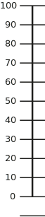

Armesgebrauch im
Alltag
Wie wichtig ist die Änderung
des Armgebrauchs im Alltag
für Sie?
(während den letzten
7 Tagen)
Bitte ziehen Sie den
Punkt auf den
entsprechenden Wert

Wie wichtig ist die Änderung
des Armgebrauchs im Alltag
für Sie?
(während den letzten
7 Tagen)
Bitte ziehen Sie den
Punkt auf den
entsprechenden Wert